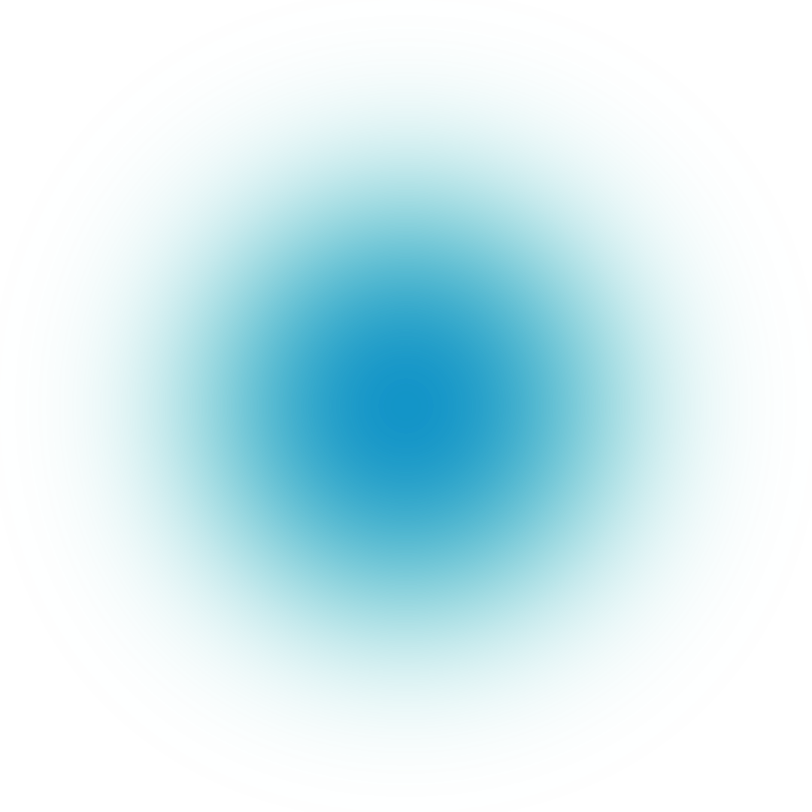
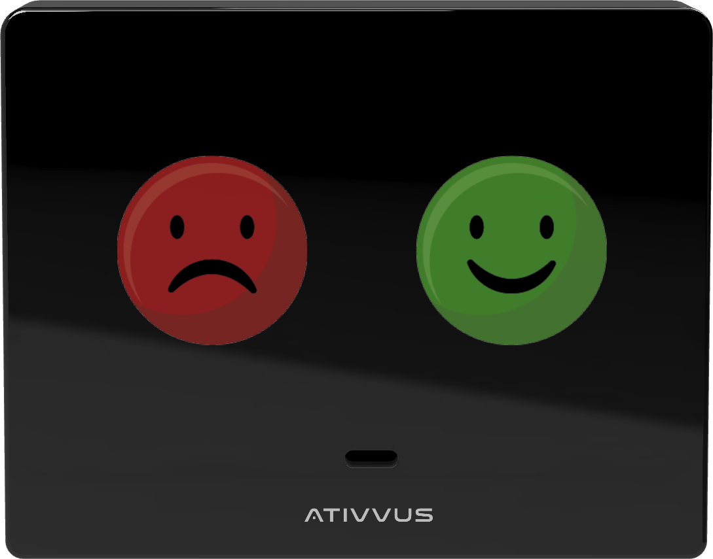

AXIA FLOW
tecnologia aliada a qualidade de ambientes



O Axia Flow é o único dispositivo capaz de apontar métricas como fluxo de pessoas e índice de satisfação em um ambiente. Com tecnologia avançada projetada para simplificar a captura de informações, ele é o ponto de partida de nosso ecossistema de dados.
O Axia Badge é a chave para transformar dados em ações concretas. Sua tecnologia é capaz de gerar dados sobre a rotina da operação, métricas de saúde ocupacional, além de permitir o acompanhamento de tarefas pendentes através de sua interface.
A sinergia entre o Axia Badge e Axia Flow garante que a geração de dados seja a mais completa possível. Essa integração estratégica não apenas otimiza a eficiência operacional, mas também oferece insights preciosos para aprimorar rotas, alocar recursos de forma eficaz e, por conseguinte, elevar significativamente todos os padrões na gestão de facilities.
Nosso sistema analisa os dados capturados pelos devices e oferece monitoramento em tempo real dos ambientes, proporciona uma visão clara do desempenho real de cada espaço. Além disso, calcula uma infinidade de métricas capazes de antecipar necessidades da operação, promovendo uma gestão eficiente e proativa.

Nosso sistema analisa os dados capturados pelos devices e oferece monitoramento em tempo real dos ambientes, proporciona uma visão clara do desempenho real de cada espaço. Além disso, calcula uma infinidade de métricas capazes de antecipar necessidades da operação,promovendo uma gestão eficiente e proativa.